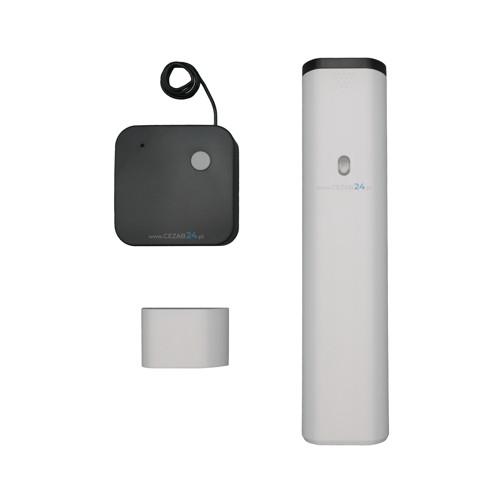

Kontrola położenia
Monitoruje stan drzwi przejściowych przed ruchem bramy.
Kontrola zamknięcia drzwi w skrzydle bramy.
Bezprzewodowy czujnik kontrolujący zamknięcie drzwi przejściowych przed uruchomieniem bramy.

Czujnik pomaga ograniczyć ryzyko uruchomienia bramy przy otwartych drzwiach przejściowych.
Monitoruje stan drzwi przejściowych przed ruchem bramy.
Ułatwia doposażenie instalacji bez prowadzenia dodatkowego okablowania przez skrzydło.
Dobierany jako element konfiguracji zabezpieczeń bramy przemysłowej.
| Typ | Bezprzewodowy czujnik drzwi przejściowych |
|---|---|
| Zastosowanie | Kontrola zamknięcia drzwi przed ruchem bramy |
| Montaż | Na bramach z drzwiami przejściowymi |
| Status oferty | Akcesorium dodatkowe, produkt spoza oferty GAPOSA |
Podaj typ bramy, centrali i drzwi przejściowych. Pomożemy dobrać właściwy wariant akcesorium.